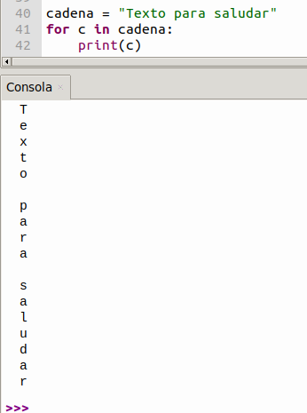

Explicación de código
Sección dedicada a dar explicación de código MicroPython utilizado en las actividades y proyectos que se desarrollan.
Importación en MicroPython¶
En MicroPython, las librerías son archivos o módulos que contienen funciones preescritas que puedes usar en tu código. Como los microcontroladores tienen memoria limitada, en lugar de cargar todo el sistema, importas solo lo que necesitas mediante la palabra reservada import.
Las formas de importar son:
- Importar todo el módulo: Se utiliza
importseguido del nombre. Para acceder a sus funciones, debes usar el prefijo del módulo y un punto.
import machine
pin = machine.Pin(2, machine.Pin.OUT)
- Importar funciones específicas: Se utiliza
from ... import .... Esto te permite usar la función directamente sin escribir el nombre del módulo cada vez, lo cual ahorra memoria.
from machine import Pin
pin = Pin(2, Pin.OUT)
- Renombrar un módulo: Usando
as, puedes asignar un alias corto. Es muy útil para simplificar nombres largos o mantener estándares.
import time as t
t.sleep(1)
Algunas librerías de uso común son:
machine: Es la librería fundamental para interactuar con el hardware (pines GPIO, PWM, I2C, SPI).time: Para gestionar pausas (esperas o delays) y temporizadores.network: Para conectar el dispositivo a redes Wi-Fi.
MicroPython utiliza nombres de librerías con el prefijo u (por ejemplo, utime o uos) para indicar que son versiones ultraligeras adaptadas desde la biblioteca estándar de Python.
Control del Sistema y Placa¶
Estos comandos gestionan el estado, la frecuencia y la memoria de tu placa ESP32.
🟣 import machine
Es la instrucción que carga la librería nativa de MicroPython que permite acceder a los componentes físicos de la placa y controlarlos.
🟣 from machine import Pin
Importa "Pin"" de "machine" para activar sus funciones y dar acceso a pines.
La clase machine.Pin tiene la siguiente sintaxis:
machine.Pin(id,mode,pull,value)
id: Número de pin GPIO en ESP32. Por ejemplo para habilitar el pin GPIO22 deberás escribir 22.mode: El modo de trabajo del pin puede serPin.IN(0)para configurar el pin como entrada;Pin.OUT(1)para configurar el pin como salida (normal) oPin.OPEN_DRAIN(2)que configura el pin como salida de drenador abierto.pull: Especifica si el pin está conectado a una resistencia de polarización y solo es válido en modo de entrada y puede serNonepara sin polarización (ni pull-up ni pull-down);Pin.PULL_UP(1)que habilita la resistencia de pull-up oPin.PULL_DOWN(2)que habilita la resistencia de pull-down.value: Solo funcionan en los modosPin.OUTyPin.OPEN_DRAIN; asigna el valor inicial del pin de salida. De lo contrario, el estado del pin permanece inalterado. El 0 corresponde al estado lógico bajo (apagado), mientras que el 1 corresponde al estado lógico alto (encendido).Pin.on()- establece el pin en estado alto yPin.off()- establece el pin en estado bajo.
🟣 from machine import Pin, PWM
Sirve para importar la clase PWM (Modulación por Ancho de Pulso) desde el módulo de hardware de MicroPython. Te permite simular salidas analógicas en pines digitales modificando el ciclo de trabajo de la señal eléctrica.
La clase machine.PWM en MicroPython permite generar señales PWM. Transforma un pin digital en una salida capaz de emular voltajes analógicos.
Parámetros Principales. Una señal PWM se define por:
machine.PWM(pin): Constructor del objeto PWM: reinicializa el GPIO especificado y lo configura como salida PWM. Siendopinel GPIO que debe configurarse como salida PWM.PWM.freq（valor）: Cantidad de ciclos que la señal se repite por segundo, medida en Hertz (Hz). Establece la frecuencia de salida PWM. Siendovalorla frecuencia de salida PWM. El valor debe ajustarse a la fórmula de cálculo de la frecuencia PWM.PWM.duty（valor）: Porcentaje de tiempo que la señal está en nivel "alto" (3.3V o 5V) dentro de cada ciclo. Establece el ciclo de trabajo. El valor correspondiente se calcula automáticamente a partir devalor, que establece la relación del ciclo de trabajo.pwm.deinit(pin): Desactiva el PWM en ese pin.
Tiempo¶
Para la gestiona de retardos o demoras.
🟣 import time
El módulo time de Python permite trabajar con horas, medir tiempos de ejecución y realizar pausas.
time.time(): Devuelve el tiempo actual en segundos desde el Epoch. Para medir el tiempo de ejecución de un programa, se recomienda usartime.perf_counter()time.sleep(2): Pausa el programa durante 2 segundos.time.sleep_ms(500): Pausa durante 500 milisegundos.time.sleep_us(100): Pausa durante 100 microsegundos.
Epoch
Según Wikipedia, el epoch time (tiempo Epoch) o tiempo Unix es un sistema utilizado en informática para medir el tiempo mediante un número entero simple. Representa la cantidad total de segundos transcurridos desde la medianoche del 1 de enero de 1970 (00:00:00 UTC)
🟣 time.sleep(1)
Retardo de un segundo.
🟣 time.sleep_ms(1)
Retardo de un milisegundo. El de uso más común.
🟣 time.sleep_us(1)
Retardo de un microsegundo.
Conversión:
1s = 1000 ms, 1 ms = 1000 µs
Entradas y Salidas Digitales (GPIO)¶
Controla pines físicos como entradas o salidas para leer sensores o encender LEDs.
pin = machine.Pin(2, machine.Pin.OUT): Configura el pin GPIO 2 como salida.pin = machine.Pin(4, machine.Pin.IN, machine.Pin.PULL_UP): Configura el pin GPIO 4 como entrada con resistencia pull-up.pin.value(1) o pin.on(): Pone el pin en nivel alto (3.3V).pin.value(0) o pin.off(): Pone el pin en nivel bajo (0V).estado = pin.value(): Lee el valor digital actual del pin (0 o 1).
🟣 led = Pin23(Pin.OUT)
Conecta el LED al pin io23 y configura el pin como salida.
¿Por qué salida?
El código está escrito para la placa base. En esta placa, el pin io23 envía niveles de tensión (alto o bajo) al módulo conectado.
🟣 led.on() y led.off()
En el pin io23 de la placa base, se envía un nivel alto (1) y un nivel bajo (0), respectivamente; es decir, envía un nivel alto (1) o un nivel bajo (0) al módulo LED para encenderlo o apagarlo.
Estructuras de control¶
Se dividen en condicionales y bucles, y son esenciales para tomar decisiones y automatizar acciones en microcontroladores.
Bucle While¶
El bucle while en MicroPython es una estructura de control que repite un bloque de código continuamente mientras una condición específica sea verdadera. En microcontroladores (como ESP32), se usa mucho while True para crear bucles infinitos que mantienen el dispositivo ejecutando tareas en segundo plano.
Sintaxis básica
while condicion:
# Aquí va el código que se repite mientras la condición sea True
🟣 While True:
Las instrucciones de esta función se ejecutarán en un bucle infinito.
Bucle for¶
En MicroPython, el bucle for se utiliza para repetir un bloque de código a lo largo de una secuencia de elementos o un rango de números. Es ideal para recorrer listas, cadenas de texto o realizar acciones repetitivas.
En su sintaxis básica utiliza la palabra reservada for acompañada de una variable temporal, seguida de in, el objeto iterable y dos puntos (:). El código a repetir debe ir identado.
for variable in secuencia:
# Código a ejecutar en cada repetición
Los casos más comunes son:
- Repetir un número fijo de veces. Se utiliza la función
range(), la cual genera una sucesión de números.
for i in range(10): # Cuenta del 0 al 9
print(i)
- 2. Recorrer listas o tuplas. Itera directamente sobre los elementos de una colección, por ejemplo, los pines de unos LEDs.
pines = [1, 2, 3, 4]
for pin in pines:
print("Activando pin:", pin)
- Recorrer cadenas de caracteres. El bucle recorre el contenido de la cadena elemento por elemento.
cadena = "Texto para saludar"
for c in cadena:
print(c)
{kind=link}

- Modificadores. Puedes alterar el comportamiento del bucle usando las instrucciones
break(Termina el bucle inmediatamente) ocontinueque salta el resto de la iteración actual y pasa a la siguiente.
Condicional if-else¶
La estructura if-else en MicroPython permite tomar decisiones en el código. Evalúa una condición y, si es verdadera, ejecuta un bloque de código; si es falsa, ejecuta un bloque alternativo. Se utiliza la indentación (espacios o tabulaciones) para definir qué instrucciones pertenecen a cada bloque.
Palabras clave importantes
- if: Evalúa una condición inicial.
- else: Ejecuta el código por defecto si la condición del if no se cumple.
- elif: (Abreviatura de else if) Permite encadenar múltiples condiciones adicionales si las anteriores fueron falsas.
Entradas Analógicas (ADC)¶
Permiten leer señales analógicas, como potenciómetros o sensores de temperatura.
adc = machine.ADC(machine.Pin(34)): Configura el pin GPIO 34 para leer señales analógicas y convertirlo en valores digitales. En ESP32 prepara el hardware para la Conversión Analógico-Digital (ADC), asigna el pin y realiza la preparación para la lectura creando el objetoadc.adc.atten(machine.ADC.ATTN_11DB): Rango de medición de 0V a ~3.6V (atenuación completa).valor = adc.read_u16(): Devuelve el valor leído en 16 bits (0 a 65535).valor = adc.read(): Devuelve el valor original de 12 bits (0 a 4095).
🟣 adc = ADC(Pin(34))
Crea el objeto adc y establece el pin GPIO 34 como entrada. Pin(34) asigna un pin; ADC(Pin(34)) significa que el pin GPIO 34 es el pin de entrada del ADC.
🟣 adc.atten(ADC.ATTN_11DB)
Establece el valor de atenuación del ADC. La atenuación amplía el rango de tensión del ADC. ADC.ATTN_11DB es un ajuste opcional del ESP32 que amplía el rango de tensión de 0-3,6 V. El ADC del ESP32 admite diferentes ajustes de atenuación:
ADC.ATTN_0DBrango de voltaje de entrada de 0 a 1VADC.ATTN_2_5DB：rango de voltaje de entrada de 0 a 1.34VADC.ATTN_6DB：rango de voltaje de entrada de 0 a 2VADC.ATTN_11DB：rango de voltaje de entrada de 0 a 3.3V
El ajuste de la atenuación te ayuda a leer con precisión las señales analógicas en diferentes rangos de tensión.
🟣 adc.width(ADC.WIDTH_12BIT)
Establece la resolución del ADC en 12 bits. El ADC del ESP32 se puede configurar con diferentes resoluciones:
ADC.WIDTH_9BIT: resolución de 9 bitsADC.WIDTH_10BIT: resolución de 10 bitsADC.WIDTH_11BIT: resolución de 11 bitsADC.WIDTH_12BIT: resolución de 12 bits
La resolución de 12 bits significa que el ADC puede subdividir la tensión de entrada en \(2^{12} = 4096\) niveles, lo que permite obtener mediciones más precisas.
Funciones¶
En MicroPython, las funciones son bloques de código reutilizables que realizan tareas específicas. Sirven para estructurar los programas y evitar la repetición de instrucciones, permitiendo pasar variables (argumentos) y obtener resultados. Son fundamentales para mantener un código limpio y eficiente en microcontroladores.
Para trabajar con funciones en MicroPython, se utilizan conceptos y palabras clave del estándar de Python:
- Definición (
def): Se usa la palabra reservadadef, seguida del nombre de la función, paréntesis para los parámetros opcionales y dos puntos (:). El código de la función debe ir identado. - Argumentos: Son los datos de entrada que recibe la función.
- Retorno (
return): Permite devolver un resultado final después de ejecutar el bloque de código. - Llamada o invocación: Para ejecutar la función, simplemente se escribe su nombre seguido de paréntesis.
Por ejemplo:
# Definición de la función
def sumar(a,b):
# Bloque de código
suma = a + b
return suma
# Llamada a la función
resultado = sumar(6,8)
print('La suma es:', resultado)
La suma es: 14
Built-in Functions¶
Se trata de la categoría de Funciones Integradas del lenguaje principal Python.A diferencia de los comandos, no pertenece a ningún módulo de hardware y no requiere un comando import para poder usarse.
Sus características clave en entorno ESP32 son:
print(): Envía texto, variables o estados de sensores hacia la consola (STDOUT) para que puedas verlos en tu computadora a través del entorno de desarrollo (como Thonny IDE).
STDOUT
En MicroPython, stdout (Standard Output o Salida Estándar) es el canal predeterminado que utiliza el microcontrolador para enviar mensajes de texto o resultados. Por lo general, este canal está dirigido a la consola o terminal serie (como el REPL) de tu ordenador mediante el puerto USB o UART.
🟣 print("Valor del ADC de sonido:",V_adc)
Muestra los caracteres entre comillas dobles y el valor de la variable V_adc. Se produce un salto de línea tras la impresión.
🟣 print(valor_PIR, end = " ")
Imprime valor_PIR sin saltos de línea. end=" " significa que no debe haber salto de línea y que debe terminar con un espacio, para mostrar de forma continua los cambios en el estado del sensor en la misma línea.
++++++++++++++++++++++++++++++++++++++++++++++
machine.freq(): Devuelve la frecuencia actual de la CPU. machine.freq(240000000): Fuerza la CPU a 240 MHz. machine.reset(): Reinicia la placa por software. machine.unique_id(): Devuelve el identificador único (MAC) del chip. machine.idle(): Pone la CPU en estado de bajo consumo hasta la próxima interrupción.
Entradas Analógicas (ADC) Permite leer señales analógicas, como potenciómetros o sensores de temperatura. adc = machine.ADC(machine.Pin(34)) adc.atten(machine.ADC.ATTN_11DB): Rango de medición de 0V a ~3.6V (atenuación completa). valor = adc.read_u16(): Devuelve el valor leído en 16 bits (0 a 65535). valor = adc.read(): Devuelve el valor original de 12 bits (0 a 4095).
Protocolos de Comunicación (I2C y SPI) Comunícate con pantallas OLED, giróscopos y otros dispositivos periféricos. I2C: i2c = machine.I2C(0, scl=machine.Pin(22), sda=machine.Pin(21), freq=400000) dispositivos = i2c.scan(): Escanea y devuelve las direcciones I2C conectadas en hexadecimal.i2c.readfrom(dir, bytes) / i2c.writeto(dir, 'dato')
SPI: spi = machine.SPI(1, baudrate=10000000, polarity=0, phase=0, sck=machine.Pin(18), mosi=machine.Pin(23), miso=machine.Pin(19)) spi.write(buf) / spi.read(nbytes)
Sistema de Archivos import os os.listdir(): Lista los archivos y carpetas en el sistema. os.remove('archivo.py'): Elimina un archivo. os.mkdir('carpeta'): Crea una carpeta nueva.
Conectividad (Wi-Fi y Bluetooth) Activa las interfaces de red inalámbricas de tu ESP32. Wi-Fi: import networkw lan = network.WLAN(network.STA_IF): Crea un objeto de interfaz de red Wi-Fi (modo estación). wlan.active(True): Enciende el módulo Wi-Fi. wlan.connect('SSID', 'PASSWORD'): Conecta a una red Wi-Fi. wlan.isconnected(): Devuelve True si la conexión fue exitosa. wlan.ifconfig(): Devuelve la configuración IP (IP, máscara, gateway, DNS).